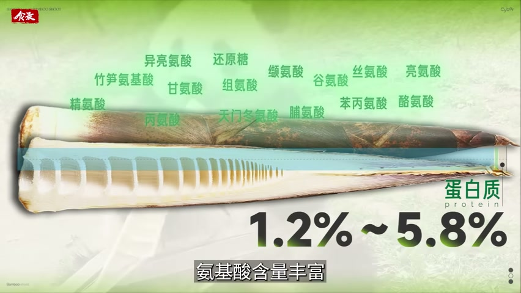

为什么除了中国，很少有国家吃笋呢？
有竹子不等于吃笋：从品种、产区、去涩到五小时窗口
竹子到处都有，能端上日常餐桌的却集中在中国。差距落在三道门槛上：可食用品种与产区、去涩与烹饪、采后五小时的处理。哪一道没过，竹笋就留在竹林里。
一份基于视频证据的深度总结

竹子遍布世界，吃笋却集中在中国
地球上超过两千两百万公顷的土地上生长着竹子，中国只占其中不到三分之一的面积。竹笋并不是中国特有的食材。1
消费的数据正好相反：中国占据世界竹笋消费的三分之二，而除了中国，只有零星几个国家形成了吃笋的习惯。2
问题因此变得具体：竹子到处都有，为什么把它端上日常餐桌的只有中国？3

竹笋本身：十天上桌，靠甜、鲜、脆站住
竹笋经过整个冬天的蛰伏，在春雨滋润之后破土；接下来十天里，它每天能向上窜 20 到 30 厘米。5
风味来自几类物质：还原糖给出甜口的底味，不同的氨基酸分别承担鲜味、苦味和甜味，单宁、草酸则添上一层青涩。6
口感由 1.8% 的膳食纤维搭配 90% 的含水量撑起来，一口咬下去是清脆的响声。7
它的蛋白质含量在 1.2% 到 5.8% 之间，氨基酸组成比例均衡，八种人体必需氨基酸含量丰富，是优质的植物蛋白来源。8

第一道门槛：可食用品种和产区
世界上有一千三百多种竹子，中国境内约有五百种，但长出来的笋有的太小、采集效率太低，有的纤维硬、苦味重。经过数百上千年的挑选，常见的可食用竹笋只剩下二十余种。10
产区决定同一品种好不好吃：气候、地形、土壤和水文都会改变竹笋的风味。其中光照的影响很直接——光照增强会加速单宁类物质的合成，落到嘴里就表现为涩味。11
反过来，中国江南地区和南方山区的春笋不需要长时间发酵或调味腌制，在鲜笋状态下就能呈现鲜甜脆嫩的味道。12

第二道门槛：把苦和涩变成风味
早期文献记录了两条去苦路径：《周礼》里的“笋菹”是腌菜，用来掩盖苦涩、方便贮藏；《齐民要术》则写下把竹笋煮熟、晒干去苦的做法。14
这套烟熏发酵、煮熟晒干的古老预处理一直用到今天：滇黔一带的酸笋和产笋区的笋干就是它的延续。对付苦涩，别处也各有办法——越南、印尼和马来西亚用椰糖、椰汁的甜去中和，印度则用重口味的马萨拉粉遮盖。15
油炒是另一道突破：蒸煮时挥发性物质随水流失，香气淡薄；油炒在高温和油脂的作用下挥发掉部分清苦气味，同时增加美拉德类物质，形成焦糖香。16
笋焖肉能把风味再推一层：肉里的肌苷酸、鸟苷酸与竹笋中的鲜味氨基酸相遇，鲜味协同可以让强度提升五到十倍；竹笋内部多孔的纤维结构又善于吸收焖煮时释放的脂溶性香气。17

第三道门槛：采后五小时和全年供应
作者把采后五小时称为“黄金时间”：如果不做特殊处理，竹笋仍在呼吸，总糖、还原糖、蛋白质和维生素的含量下降，甜味随之流失；与此同时细胞壁物质木质化，口感越来越粗糙。19
过去保鲜技术受限，中国南方只在冬春吃得上鲜笋，其余季节靠风干、烟熏和发酵保存；复水之后的笋干回不到鲜笋的鲜甜脆嫩。20
产地的条件也在起作用：武夷山一带的高山竹林昼夜温差在 10 到 15 摄氏度之间，微酸性的红黄壤让竹笋里的可溶性糖与氨基酸慢慢积累。21
采后进厂的流程，目标就是降低苦涩、保住鲜甜：先用过热蒸汽杀青，去掉笋体中的草酸和单宁；出锅后经三次冰水浸泡瞬间冷却，锁住鲜味，pH 值保持在 5.5 以上；随后进入零下 45 到 65 摄氏度的超低温冷冻，几分钟内完成，用细小冰晶保住弹脆的口感。22

中国之外：日本怎样成为另一个吃笋国家
中国之外，日本是另一个吃笋大户，也是中国竹笋的最大出口国。25
这和产地的条件有关：温和湿润的海洋性气候，加上 75% 的国土是山地，让日本出产的竹笋相对鲜甜。26
日本的吃笋历史也可以追溯到千年以前。27
为了追求极致的鲜甜脆嫩，高级日本料理会在竹笋尚未破土时，用稻草和黑色遮光布覆盖土壤、阻断阳光，得到通体雪白的白竹笋。28
来源时间
正文中的上标编号对应下面列出的时间范围，标注该段内容在视频中的位置。
- 00:00:21--00:00:30
- 00:00:30--00:00:39
- 00:00:39--00:00:42
- 00:00:00--00:00:10
- 00:01:03--00:01:12
- 00:01:49--00:02:07
- 00:02:09--00:02:16
- 00:02:18--00:02:26
- 00:01:49--00:02:26
- 00:02:46--00:03:09
- 00:03:09--00:03:46
- 00:04:41--00:05:02
- 00:02:46--00:05:06
- 00:03:56--00:04:14
- 00:04:14--00:04:41
- 00:05:40--00:05:56
- 00:06:24--00:06:38
- 00:05:33--00:07:52
- 00:08:50--00:09:07
- 00:09:07--00:09:24
- 00:09:39--00:09:43, 00:09:56--00:10:05
- 00:10:27--00:10:52
- 00:09:30--00:10:06
- 00:10:14--00:10:41
- 00:08:01--00:08:06
- 00:08:06--00:08:14
- 00:08:14--00:08:16
- 00:08:22--00:08:32